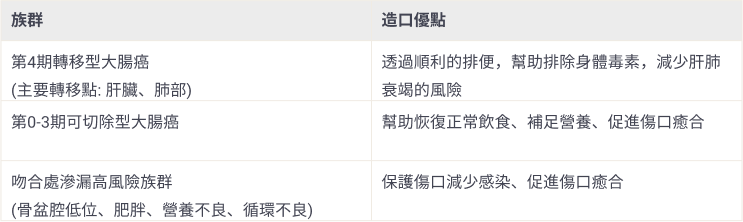

受訪者：高雄長庚醫院 大腸直腸外科 李克釗醫師
受訪者：高雄長庚醫院 大腸直腸外科 李克釗醫師
撰稿者：羅氏大藥廠 - Patient Journey Partner, Felicity Chen

大腸直腸癌一定要手術嗎?
還有機會切除，就表示還有長期存活的機會
大腸癌是預後相對良好的癌症，即使是第三期大腸癌，透過手術切除癌細胞，研究顯示患者的五年存活率仍可高達65%。目前台灣的健保已給付相當多元的藥物與手術治療，民眾積極配合醫師治療仍可預期有較佳的預後。
可以不要做造口嗎?
90%的造口是暫時性的，3個月後即可移除。
造口提供大腸接合處更好的癒合環境，幫助患者恢復得更好、更快。
造口一般位在大腸接合處之前，目的是提早攔截夾帶毒素的糞便，減少傷口汙染，促進傷口癒合。
民眾恐懼造口影響生活品質，但造口不只可以有效的幫助排除身體毒素、避免接合處遭受糞便感染、促進接合處的癒合，更可幫助患者快速恢復正常飲食，讓身體補足養分，儘快邁入下個療程。因此建議患者，不妨考慮透過三個月的短期造口，換取治療黃金時機。
造口受益族群

造口會有臭味嗎? 會不會被發現?
台灣目前的造口器材非常進步，可有效阻隔氣味的滲漏，防水，而且體積輕薄，穿著寬鬆的衣服，其實看起來與一般人無異。只有在更換便袋的時候會聞到氣味，但與一般如廁的狀況相似，因此毋須過度恐慌。
大腸癌手術傷口會很大嗎?
手術傷口取決於腫瘤大小
第1-3期的大腸癌手術主要採用腹腔鏡術式，傷口相較傳統開腹手術小，恢復時間也較快，但腫瘤尺寸若過大或已侵犯周邊組織，醫師為了將腫瘤更徹底的清除，則可能改採傳統開腹手術，即使如此，傷口也約在10公分左右，較其他器官開腹傷口小，照護上也不至於太困難。(其他器官的開腹傷口約為20公分)
大腸癌手術傷口不大，算是小手術嗎?
大腸癌手術是小傷口的大手術
由於手術技術的進步，大腸癌手術傷口與出血量可以控制得比較小，但關聯到的內臟器官眾多，因此影響層面也較廣，術後照護應格外注意。
面對大手術，術前患者應補足營養，儲備體力
大腸癌手術全程約5小時，非常消耗患者體力，術後若沒做造口，飲食受限中下，術後營養可能無法滿足傷口癒合的需求，更會影響整體預後、延誤治療的黃金時機。
大腸癌手術後該注意什麼?
應優先注重營養的補充。(病友可參考營養篇)
充足的營養與蛋白質可促進傷口癒合、提升免疫力、為患者儲備體力，快速進入下個療程，爭取治療黃金時間。
術後多數患者可正常行走與活動，但術後一個月內請避免激烈、大量使用腹部肌肉的活動 (例如: 提重物、仰臥起坐)，術後滿一個月，則可嘗試循序漸進的增加運動強度。
手術會不會導致腸沾黏，還要再開一次刀?
術後是否會沾黏，目前並沒有直接的臨床指標可以預測，但醫師在關閉造口時，或許可透過造口觀察沾黏情形。
少數腸沾黏合併腸阻塞患者，由於出現腹痛與排便不順症狀，嚴重影響生活品質，的確有需要再次手術的可能。
若民眾擔心有沾黏發生，也可考慮請醫師評估，是否需要使用防沾黏材料。
為什麼都要手術了，醫師還要我做化療?
術前的藥物治療(化療或合併標靶治療)是為了提高可切除率，爭取保留器官機能。
術後的藥物治療是為了減少高風險大腸癌的復發風險。
腫瘤越大，不只需要切除的範圍大、關聯的器官多，對患者的身體負荷也越大。事先透過藥物投予，有機會遏止腫瘤持續的侵犯、縮小腫瘤與切除範圍，提高可切除率，就有機會爭取較好的預後。
參考資料
- J Natl Cancer Inst. 2009;101(20):1412-22
M-TW-00002115
「本文章由羅氏大藥廠與醫護人員共同協作而成」
「本文章由羅氏大藥廠與醫護人員共同協作而成」